How can a computer find dents and scratches automatically?
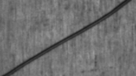
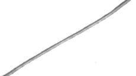
How can a camera automatically find dents and scratches on shiny metal?
In the paper: Table II

How can a camera automatically find dents and scratches on shiny metal?
In the paper: Table IIWhen designing an inspection system, you first choose the light's direction, color, and polarization so that the defect stands out. If the light is wrong, the defect does not show up in the photo. For example, the scratch in the Problem card almost disappears at 850 nm.
In the paper: Section I; Zhang et al., 2011Middle: if the dark spot were only a shadow, it would be equally dark under every light and the line would be flat. The scratch is much darker in visible light and only slightly darker in near-infrared. Gray dots mean the photo is overexposed (brightness 255), so no comparison is possible. Right: the gold diagonal band is the scratch that was found. The scattered small dots are background pixels wrongly flagged ().
At each position, line up the brightness under all the lights as a string of numbers (a brightness record) and compare it with the background. Places whose pattern differs are outlined.
In the paper: Section II–IIIThe test used 3 artificial defects: a dent 2 mm in diameter, small dents about 0.5 mm in diameter, and a scratch 6 mm long. Each method was first tuned to find at least 90% of the defect pixels. Then the share of background wrongly flagged was compared.
In the paper: Table III, Fig. 3Light is a wave; its wavelength sets the color. A spectrum shows how much light there is at each wavelength. White light covers a wide range, a single-color LED a narrow one.
In the paper: Section II-C
In the paper: Section II-A, IV
Light also has a vibration direction. A polarizer lets one direction through; a second one (the analyzer) in front of the camera dims the light depending on its angle.
In the paper: Section II-B
In the paper: Section II-B, IV
Light already polarized at angle φ passes an analyzer at angle θ with brightness falling as cos². The paper uses analyzer angles 30°, 60° and 90°.
From the paper cluster: Nayar et al. 1997, Separation of Reflection Components Using Color and Polarization; Atkinson and Hancock 2006
With a polarizer in front of the lamp, the mirror-like reflection keeps that polarization, while the diffuse part loses it. Turning the analyzer in front of the camera dims only the glare, following cos²; at 90° the glare is blocked. This is the light path of the paper's Fig. 1(a).
Nayar et al. also note that for metals the two Fresnel coefficients are nearly equal, so polarization signals from bare metal are weak. Atkinson and Hancock show that the degree of polarization depends on how much the surface is tilted, which is why the paper hopes polarization reveals a dent's 3D shape; their study covers non-metals only.
Shiny metal reflects like a mirror, so where the bright spots fall depends on the lamp. A color camera records each photo as red, green and blue channels.
In the paper: Section I, II-B, V
From the paper cluster: Shafer 1985, Using Color to Separate Reflection Components
Reflected light has two parts. The mirror-like part bounces off the surface and keeps the lamp's color. The body (diffuse) part enters the material, scatters and comes back with the material's color, so it changes with the wavelength. A defect changes the mix, so its contrast depends on which LED is on.
Illustrative numbers. Shafer's model is written for non-metals; bare metal reflects almost only the mirror-like part, so the model fits a defect only where it has oxide, roughness or oil. Linking it to this paper is our reading, not the paper's claim.
In the paper: Section II-C, IV, Fig. 2
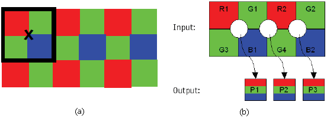
The usual fix is to tune one light (direction, color, polarization: the three basics above). But the same dent or scratch can be clear under one light and almost invisible under another.
In the paper: Section II-A, Table II
In the paper: Section I, Table II
A brighter photo does not mean a clearer defect. First brighten the whole image, then change the brightness difference between defect and background.
This demo explains contrast using a brightness difference. No noise is added, and the numbers are not measurements from the paper.
From the paper cluster: Neogi et al. 2014, Review of vision-based steel surface inspection systems; the paper's ref. [1], Zhang et al. 2011 (multi-class SVM)
Most inspection systems take one photo under one lighting, mark pixels by a gray-level threshold, then describe each marked region with features and classify it with a neural network or an SVM. Try it on the real scratch photos: pick a light, then move the threshold.
Gray threshold on a single real photo of Defect III, scored against this page's scratch label. Neogi et al. report classifier accuracies of 87–94% for six cold-rolled steel defect classes (Choi et al.), and note that no single lighting shows every defect.
Instead of choosing, take one photo per light: a white LED and 9 single-color LEDs, with and without a polarizer.
In the paper: Fig. 1, Section II-B
In the paper: Section II-D, Table I
Stack the photos. Every pixel becomes a list of brightness values, like a coarse spectrum.
In the paper: Section II-D, Table II
Each pixel becomes a list of L brightness values, one per lighting (L = 12 here, up to 60 in the paper).
All photos of one part form a cube of N × M pixels and L components; L is 3, 9, 12, 36 or 60 for the five cubes.
Needed background: relates to the image stacking in Section II-D of the paper
A brightness record must be taken from the same position on the part. Shift the second image and see whether the yellow box still reads the defect.
The grid only shows the effect of positions being offset. The paper does not propose or test an image alignment algorithm, so this demo must not be taken as the authors' method.
A defect is a pixel whose record has a different shape from the background's. SAM compares the shape; the paper also tests five other methods.
In the paper: Section IV (t1–t4)
The SAM score tells how similar a record is to the reference. If you switch the reference between background and defect, the meaning of a high score also changes.
Two brightness values are used to demonstrate SAM. The paper tested 4 kinds of reference: defect center, defect edge, a background pixel, and the average of the cube.
From the paper cluster: Kruse et al. 1993 (origin of SAM); Keshava 2004
A normal spot farther from the lamp is darker under every light by the same factor. An ordinary distance to the background then grows, and the spot is wrongly marked. SAM looks only at the direction: the darker spot still points the same way. Kruse et al. call SAM “insensitive to gain factors” for this reason.
Two-light toy example; the limits (distance 25, angle 10°) are chosen for illustration. The direction stays the same only if every light is dimmed by the same factor.
In the paper: Section III-C, Eq. (4)
SAM compares the brightness ratios under different lighting. If everything just gets brighter, the record can still look like the background. Only when the ratios change does a difference show up. Switch between the 3 examples below and compare the arrow directions with the brightness bars.
How the paper uses it: The background is used as the reference. Pixels that differ more from it are found, and then a threshold decides which are suspected defects. A similarity score is not the probability of a defect. Among the 3 artificial defects tested in the paper, SAM has the lowest average false alarm rate (Section V, Table III).
Geometry behind Eq. (4), Section III-C
The top of the SAM formula, sᵀx, equals the background length times the pixel's shadow on the background. Dividing by both lengths leaves the cosine of the angle between them.
Two-light example with s = [100, 50].
SAM scores the pixel by the angle to a reference (the background or the cube mean). Making the pixel k times brighter does not change the score.
Check with D8: s = [100, 50]; x = [200, 100] gives 1.00; x = [50, 100] gives 10000 / 12500 = 0.80.
In the paper: Section III-C · Eq. (5)
How much of the total brightness does each lighting take? First turn a set of brightness values into shares, then compare the shares of the two sets. An SID of 0 means the shares are identical. The bigger the difference, the higher the score.
Try it: first click "Reference itself". SID is 0. Then click "Dent center" and see how the shares differ. Finally multiply the whole set of brightness values by 2. Do the shares and the score change?
This section is for understanding the method. You can operate the score and threshold decision for a whole part in the defect detection demo.
Turn both lists into shares that sum to 1, then measure how different the two share distributions are (a symmetric KL divergence). 0 means identical.
In the paper: Section III-C · Eq. (6)
If you ignore the brightness values and remember only which one is brighter, can you still compare? TAU pairs up the lighting components two by two and checks whether the bright-dark order of the two sets agrees. Green means they agree, pink means they are opposite, and gray means at least one set has equal brightness.
Try it: while it plays, check the pairs one by one. 12 components give 66 pairs. Brightening everything by the same ratio does not change the ranking.
When the paper uses the background as the reference, it converts TAU's similarity score into a difference direction, and then uses a threshold to find positions that do not resemble the background.
Only the order of the brightness values counts: for every pair of lights, do pixel and reference go up and down together? +1 = same order, −1 = opposite.
In the paper: Section III-B · Eq. (3)
Is this position ordinary fluctuation, or a clear anomaly? RX compares the distance between a pixel and the background mean. At the same time it takes into account how much the background varies and how the different components change together. For example, the background usually gets brighter in two shots together, so a change where one gets brighter and the other darker is rarer. RX uses this joint behavior when it scores. The standard deviation of each component alone cannot fully describe this joint behavior.
Try it: switch between the dent and the background and look at the brightness difference under each lighting. The blue band shows each component's mean ± 1 standard deviation. The standard deviation describes how large the brightness fluctuation is. The blue band is not the decision boundary. In the end you still need to look at the RX score and the threshold.
This section is for understanding the method. You can operate the score and threshold decision for a whole part in the defect detection demo.
Distance of the pixel from the background mean, measured in units of the background’s own spread (Mahalanobis distance). No defect template needed.
In the paper: Section III-A · Eq. (1)
You already know what a dent looks like. How do you find similar positions? Use the set of brightness values at the center of a dent as the template. Then reduce the influence of the variations that are common in the background, and look for the template's features. This adjustment is a kind of weighting. The covariance matrix records the fluctuation and joint behavior of the background, and its inverse matrix is used in scoring. So AMF is more than a direct comparison of two brightness curves.
Try it: first choose the dent center, then multiply the whole set of brightness values by 2. If the template and the background weights stay fixed and only the tested pixel's whole set of brightness values is multiplied by 2, the AMF score becomes 4 times larger.
This section is for understanding the method. You can operate the score and threshold decision for a whole part in the defect detection demo.
How strongly the pixel matches a known defect template s, after weighting by the inverse background covariance.
In the paper: Section III-A · Eq. (2)
If it looks like the same defect but is just brighter, should the score change? ACE uses the same background weights as AMF. Compared with AMF, it also divides by the pixel's weighted squared length. With the template and background weights fixed, if the whole set of brightness values of the tested pixel is multiplied by the same positive number, the score stays the same. If only some components change, or a constant brightness is added, the score is not guaranteed to stay the same.
Try it: stay at the same position and change only the brightness multiplier. The curve rises and falls, but the ACE score does not change. When compared with the template itself, the score is 1.
This section is for understanding the method. You can operate the score and threshold decision for a whole part in the defect detection demo.
AMF divided by the pixel’s own weighted length, so overall brightness cancels. In effect it is a squared cosine, like SAM, after whitening.
Every pixel gets a score; the threshold decides which pixels are marked.
Section IV (complement of the normalized map) and appendix (U3)
SAM gives a high score to pixels that look like the background, which is the opposite of what we want to mark. The paper first scales every map to 0–1, then flips it (1 − y), so that a high score means “unlike the background”. Step through it on three real pixels of Defect I.
Real data: Defect I, 12 monochromatic components, cosine to the image mean.
In the paper: Section III · Section V
Is outlining more always better? The algorithm first gives each pixel a score, and then the threshold decides which pixels are flagged. Lowering the threshold usually finds more of the defect, but it also tends to count normal surface as defect.
Try it: first flag less, then flag more. Watch how the right image gains or loses flagged pixels, and compare the share of missed and wrongly flagged pixels.
The comparison results are calculated using this page's dent-area labels. "At least 90% found" uses these labels to pick the threshold. It does not mean a new, unlabeled part would also reach 90%. The two methods use the same set of monochromatic-light images and the same labels.
Pixels scoring at least the threshold η are marked. PD = share of defect pixels marked; PFA = share of background marked. FAR is PFA at the threshold that finds 90% of the defect.
Run it on the real photos, then score it the paper's way: find 90% of the defect and count the false alarms.
First compare white light with monochromatic light, then play the scan, and finally adjust the threshold.
The left image is the metal part. The right image shows the area the algorithm outlines. Play the scan first, then move the threshold. Is the dent found? Is normal surface also flagged?
Yellow: selected position / Blue: comparison reference
The starting threshold is set to find at least 90% of the dent, which makes it easier to compare the wrongly flagged areas. The preview lighting only changes the image shown behind the result. The image to analyze decides which brightness values the algorithm uses. SAM, SID, and TAU use the average of the whole image set as the reference. RX compares against the background mean and its covariance. Each method's scores are scaled separately to 0–1, so their sizes cannot be compared directly. The scan animation reveals the pixel-by-pixel results in order.
In the paper: Section III · Section V
Two methods outline different areas. How do you compare which is better? The detection rate PD is the share of dent pixels that are found. The false alarm rate PFA is the share of normal background that is wrongly flagged. Each threshold gives one pair (false alarm rate, detection rate), which is one point on the plot. When you change the threshold, the point moves. The different thresholds together form a whole ROC curve.
Try it: first fix the comparison condition at finding at least 90% of the dent, then compare how much background is wrongly flagged. This rate is the FAR used in the paper. AFAR is the average FAR over several settings.
The comparison results are calculated using this page's dent-area labels. "At least 90% found" uses these labels to pick the threshold. It does not mean a new, unlabeled part would also reach 90%. The two methods use the same set of monochromatic-light images and the same labels.
Every threshold gives one point (false alarm rate, detection rate); sweeping the threshold from 0 to 1 in steps of 0.001 traces the curve.
In this paper's SAM comparison, when each method is set to find at least 90% of the defect pixels, the monochromatic-light combination gives fewer false alarms than the white-light combination. The effect of polarization depends on the setting.
In the paper: Fig. 3, Section V. The experiments include 3 artificial defects. For the full results and limits, see the results explanation and the limits explanation.
The paper averages the FAR over 5 cubes × 4 references = 20 settings (5 for RX). SAM: 0.50%, 0.01%, 1.32%.
How the scoring works. Each detection map is first normalized to 0 to 1, and then thresholds are tested at steps of 0.001. Every threshold gives a detection rate PD (the share of true defect pixels that are found) and a false alarm rate PFA (the share of normal background pixels wrongly judged as defect). Lower the threshold from high to low and plot every pair of PD and PFA as a curve. This is the ROC curve.
To compare with a single number, the paper fixes the target detection rate GDR at 90%. Among the thresholds that reach a detection rate of at least 90%, the one with the lowest false alarm rate is chosen, and this rate is called FAR. The FARs of the 20 settings formed from 5 cubes and 4 reference spectra are then averaged to give AFAR. RX needs no reference spectrum, so it averages only 5 detection maps (reported in the paper, Section V).
A FAR of 0% means there were no false alarms for this set of pixels and scoring conditions. A FAR of 50% means that, to find 90% of the defect pixels, half of the background was also judged as defect. Take the data this page calculated for Defect I as an example. The image is 170×420 pixels, with 8515 labeled defect pixels and 62885 background pixels. A FAR of 1% is about 629 background pixels wrongly judged. The paper lists the size as 170×240, which differs from the image embedded in the PDF. The paper sets no value that a production line can accept, so this page uses these results to compare the relative performance of the methods.
The paper's results. In Table III, SAM's AFAR for the 3 defects is 0.50%, 0.01%, and 1.32%. The other methods' results range from 2.96% to 76.11%. The authors think AMF and ACE perform worse for 2 reasons. The spectrum of the same defect changes with position, so a single template can hardly cover all the defect pixels. Also, their assumptions of a uniform background and a normal distribution may not hold for metal parts (reported in the paper, Section V). The ROC curves of Fig. 3 show that, under the conditions compared in the figure, the monochromatic-light cube (green lines) is clearly better than the white-light cube (red lines).
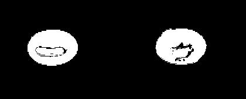
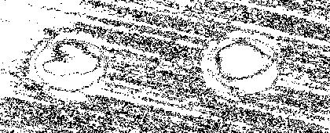
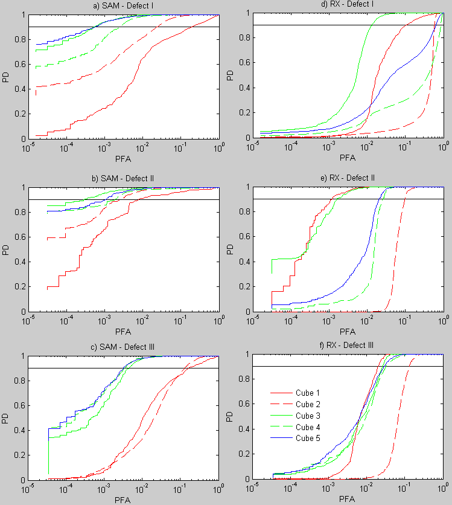
This page's reproduction. The paper's PDF provides 15 unpolarized photos for each of the 3 defects, which correspond to cubes 1 and 3. This page uses these photos to rebuild cubes 1 and 3 and their merge, and tests 6 methods (reproduced on this page). The calculated results of this page and the conditions for interpreting them are listed below:
The authors point out that RX may perform poorly when the background is not uniform or the defect area is large (reported in the paper, Section V). The Defect I dents labeled on this page take up about 12% of the frame. If the background statistics are estimated from the whole cube, these pixels are also counted in.
This page's reproduction of RX on cube 3 gives a FAR of 0.11% to 1.84%, close to SAM. In the paper, RX's AFAR on Defect I is 45.66%. The conditions of these two sets of numbers differ. The paper's AFAR includes the polarized cubes, while this page has only unpolarized photos. The paper also does not say how the defect area was labeled, while this page labeled it by eye from the 505 nm photo. Without the polarized photos and the paper's defect labels, we cannot yet tell which condition causes the gap.
Scoring background: detection rate and false alarm rate; Section III, V of the paper
You must first outline the true defect area before you can score. Keep the yellow decision unchanged and adjust only the blue label area.
Labels should be decided from evidence of the defect, and never adjusted just to raise the score. This is a demo of the scoring mechanism. The paper does not say how it drew its defect labels.
Results with evidence. Among the 3 artificial defects tested in the paper, SAM's AFAR does not exceed 1.32% for any of them. This is the average over 4 reference spectra and 5 cubes (reported in the paper, Table III). The authors also report that when using t3 and t4, which need no defect spectrum, the FAR of each cube can drop to 0% (reported in the paper, Section V). This is the result under a specific setting. It cannot be read as meaning that every combination of reference spectrum and cube has no false alarms. This page reproduced, with the photos embedded in the paper, the trend that the monochromatic-light cube is clearly better than the white-light cube (reproduced on this page).
SAM's amount of computation is proportional to the number of components (reported in the paper, Section V). Whether it is usable on a real production line still has to be judged from the image capture speed and the processing time.
Conditions to keep in mind. The effect of polarization changes with the defect shape and the algorithm. The authors say only that it helps in some cases (reported in the paper, Section V). The results of monochromatic-light cubes 3 and 4 are close, and the better choice also varies with the defect, so the authors suggest merging all of them as a compromise (reported in the paper, Section V). In addition, the monochromatic-light cube both increases the number of components and changes the wavelengths. The experiments did not compare these 2 factors separately.
Open questions. The authors point out that real defects vary greatly in appearance, are hard to represent with a single spectrum, and are hard to cover in advance. This is the motivation for studying unsupervised methods (reported in the paper, Section VI). This paper tests only artificial defects on 3 flat metal parts. The paper lists the 3 image sizes as 170×240, 90×360, and 130×230 pixels (Section IV). For Defect I, the image embedded in the PDF is actually 170×420, and this page calculates from the embedded image. So the scope of the results is still limited by these conditions.
Scoring also needs to know which pixels are the true defect, that is, the ground truth. Making the labeled area larger or smaller affects the FAR. The paper does not describe how it labeled, and the first author's doctoral thesis does not add this information either (Benmoussat 2013, p.58).
Later industrial inspection research keeps exploring methods that use only normal samples and need no defect template in advance. It has also built public datasets with pixel-level manual labels (Bergmann et al. 2019). The same team switched to thermal imaging for its follow-up work (Benmoussat et al. 2013).
Core problem: How visible a metal defect is changes with the lighting, and it is hard to pick the best lighting in advance. A single-image brightness-threshold method can reach a false alarm rate of 100% under some lightings (reproduced on this page).
Improvement supported by evidence: Building a pseudo-spectral cube from images under many lightings, and then comparing the spectral shape with SAM, reduces the dependence on a single photo. Under the condition of detecting 90% of the defect pixels, SAM's average false alarm rate over 5 cubes and 4 reference spectra is 0.01% to 1.32%. The authors also report that reference settings that need no defect template can give a FAR of 0% (reported in the paper, Table III, Section V). This page's reproduction also shows that, when SAM uses t4, the false alarm rate of the monochromatic-light cube is clearly lower than that of the white-light cube (reproduced on this page).
Still unsolved: The experiments have only 3 artificial defects. The effect of polarization changes with conditions. The effects of adding components and switching to monochromatic light have not been separated. These results are not yet enough to confirm performance on a real production line.
The headline result holds up well (SAM wins by a wide margin), but the evidence for “better light” is mixed with “more numbers”, and the test is small.
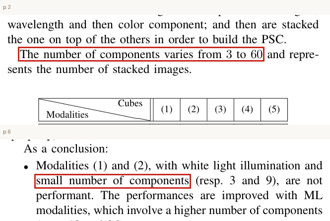
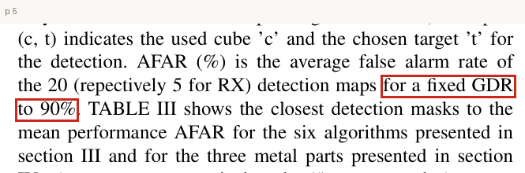
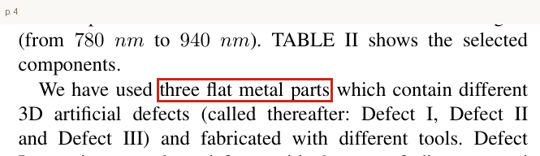
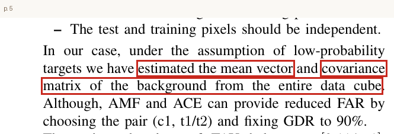
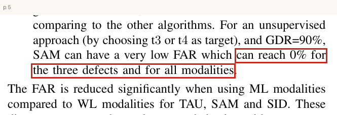
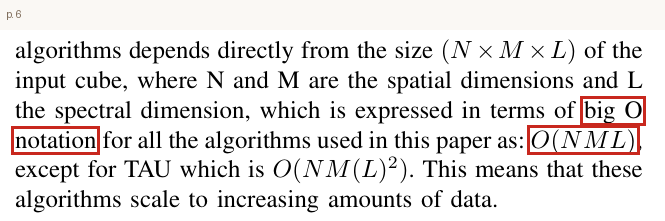
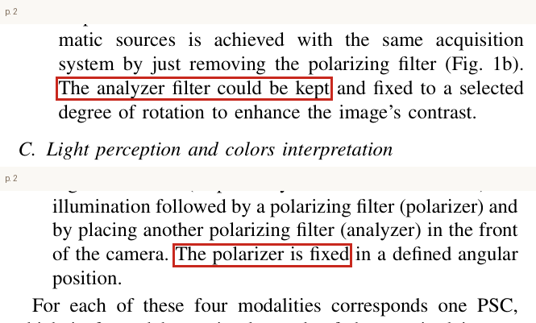
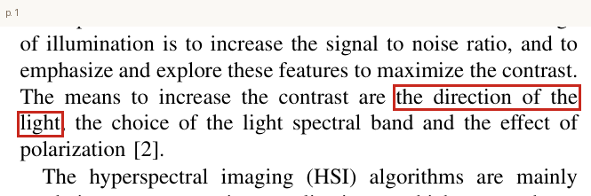
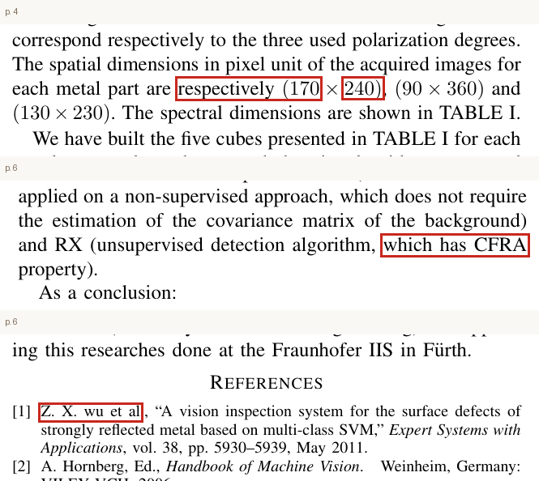
Sources: Gu et al., AnomalyGPT, AAAI 2024; Li et al., Myriad, arXiv 2023; Jiang et al., MMAD, ICLR 2025
Not part of the talk. Use these sections to answer questions.
There are 23 topics. They start with light and spectra (A), polarization (B), and metal reflection and cameras (C), then move to data and algorithms (D) and decisions and scoring (E). Data, algorithms, and scoring are concentrated in D and E. Every topic has an interactive demo.
| No. | Topic | In the paper |
|---|---|---|
| A. Light and spectra | ||
| A1 | Wavelength and color of light | Section II-C |
| A2 | Spectrum, multispectral, and hyperspectral | Section I, II-D |
| A3 | LED light sources | Section II-A, IV |
| A4 | How white light and monochromatic light differ in photos | Section II-A, Table II |
| B. Polarization | ||
| B1 | What polarization is: two fences | Section II-B |
| B2 | Analyzer angle and brightness | Section II-B, IV |
| B3 | The imaging system | Fig. 1, Section II-B |
| B4 | Four kinds of lighting: UWL, PWL, UML, PML | Section II-D, Table I |
| C. Metal reflection and cameras | ||
| C1 | Light angle and metal reflection | Section I, II-B, V |
| C3 | Contrast between defect and background | Section I, Table II |
| C2 | How a color camera records color | Section II-C, IV, Fig. 2 |
| C4 | Image alignment | Needed background; relates to Section II-D |
| D. Data and algorithms | ||
| D1 | Stacking photos into a cube | Section II-D, Table II |
| D8 | How to choose the reference record | Section IV (t1–t4) |
| D2 | SAM: telling overall brightening from a difference from the background | Section III-C, Eq. (4) |
| D3 | SID: comparing the share of each brightness | Section III-C, Eq. (5) |
| D4 | TAU: comparing the bright-dark ranking | Section III-C, Eq. (6) |
| D5 | RX: finding positions beyond the background's variation | Section III-B, Eq. (3) |
| D6 | AMF: matching against a known defect template | Section III-A, Eq. (1) |
| D7 | ACE: template matching that ignores overall brightness | Section III-A, Eq. (2) |
| E. Decisions and scoring | ||
| E1 | Threshold: the trade-off between finding more and flagging less wrongly | Section III, V |
| E2 | Missed detections, false alarms, and the ROC curve: comparing detection results fairly | Section III, V |
| E3 | How defect labeling affects the score | Scoring background; relates to Section III, V |
Pick one method below and read upward along the solid lines. Click a box to see its formula.
Solid lines: each method computes its own score → arrange the high-low direction → outline with a threshold → score against the labels → compare false alarms under the condition of finding at least 90% of the defect.
Dashed line: with the same input and background weights, ACE = AMF ÷ the pixel's weighted squared length. This step cancels the effect of the whole tested vector getting brighter. It does not mean AMF must be run before ACE. The denominator must be greater than 0.
Finding tiny dents and scratches on a metal part is hard, because the way metal reflects light changes with the lighting. The same defect can be clearly visible under one light and blend into the background under another. It is also hard to know in advance which lighting is best.
This paper uses light sources of many wavelengths together with different polarization settings, photographs the same position under each, and stacks the images. Every pixel then has a set of numbers that says "how bright it is under each lighting". Detection methods from hyperspectral imaging can be borrowed to find positions that differ from the background.
Among the 3 artificial defects tested in the paper, SAM, which compares the shape of the spectrum, has the lowest average false alarm rate. When a background pixel or the average spectrum of the whole cube is used as the reference, no defect template needs to be supplied in advance.
A concrete example. The paper makes one artificial defect on each of 3 flat metal parts. Defect I is two dents, each 2 mm in diameter and 0.2 mm deep. Defect II is two small dents, each about 0.5 mm in diameter and 0.05 mm deep. Defect III is a scratch about 0.2 mm wide, 6 mm long, and 0.03 mm deep (reported in the paper, Section IV). A color photo can be split into 3 channels (red, green, and blue), and each channel is a grayscale image. This page reproduces the results using the photos embedded in the paper's PDF file.
Under white light and using the green channel, the two dents of Defect I appear as clear dark circles. With 505 nm green light and the same green channel, the reflection at the center of the dent is as bright as the background.
If you use only this green-light photo and look for dents with a brightness difference and a threshold, then to detect 90% of the dent pixels you end up judging 100% of the background as defect as well. Under the same conditions, the white-light green channel wrongly flags only about 0.52% of the background (reproduced on this page). This example shows that even for the same defect, changing the lighting can make the false alarm rate rise sharply.
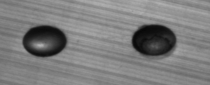
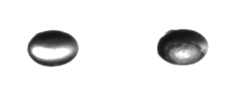
An everyday example. When a car mechanic checks a small dent on a car door, they shine a long tube light at a slant across the paint and watch where the reflection of the tube bends. What the eye sees is the change in the reflected light after the surface slope changes. A shiny metal surface is like a mirror and mostly shows specular reflection. The slopes of a dent send light in different directions. So whether a defect looks bright or dark in a photo depends on the light direction, the wavelength, and the surface condition.
Where the difficulty lies. The paper points out that lighting should make important features clearer and raise contrast and SNR (signal-to-noise ratio: how strong the useful signal is compared with the noise). The conditions you can adjust include the direction of the light, the wavelength range, and the polarization (the vibration direction of the light wave; ordinary lamp light contains many vibration directions) (reported in the paper, Section I). The paper uses white light and LED monochromatic light of 9 wavelengths, and it compares settings with and without polarization.
The best lighting is not the same for every defect. On this page, contrast is measured as the difference between the average brightness of the defect and of the background, divided by the brightness fluctuation of the two. For Defect I, the highest contrast comes from the 850 nm red channel. For Defects II and III, it comes from the 590 nm red channel (reproduced on this page). So the authors chose to use the images under many lightings together, which reduces the dependence on picking one lighting (reported in the paper, Abstract).
Traditional industrial surface inspection. The steel surface inspection process summarized by Neogi et al. 2014 first chooses the lighting, takes grayscale images, and then uses a brightness threshold, edges, or texture features to judge defects. The lighting can be bright-field (the camera receives the main reflected light, and the surface usually looks brighter) or dark-field (the camera avoids the main reflected light, so the light scattered by a defect stands out). A classifier is a program that uses these features to decide automatically between "defect" and "normal". Zhang et al. 2011, cited by this paper, studied surface defect inspection of highly reflective metal. The information obtained so far is not enough to confirm its lighting setup. This kind of process needs lighting that shows the defect clearly.
Testing the traditional method on the same images. This page tests the paper's 15 unpolarized photos one by one. The score is "the difference between a pixel's brightness and the background median", and then a threshold decides defects (reproduced on this page). All the false alarm rates below are calculated under the condition that 90% of the defect pixels are detected. They show the share of background judged as defect. The results fall into two kinds:
These results show that the main difficulty of single-image methods is that you must know in advance which lighting and channel are suitable, and the answer changes with the defect. The paper tested only 3 artificial defects. The authors also point out that real defects vary greatly in appearance, so it is hard to cover all possible defects in advance (reported in the paper, Section VI).
Borrowing remote sensing methods also requires care about when they apply. Satellite remote sensing records, for each pixel, a set of brightness values at different wavelengths, called a spectrum. The imaging technique that records a large amount of wavelength information is called hyperspectral imaging (HSI). Some HSI detection methods need the background to be uniform and to follow a normal distribution, or need the target spectrum to be given in advance (Manolakis et al. 2003). The paper points out that these conditions may not hold for metal parts (reported in the paper, Section V). In addition, the amount of HSI data and the computing load make it harder to use for real-time industrial inspection (reported in the paper, Section I).
To understand this 6-page paper, this page also collects 35 papers and textbooks. They fall into 5 themes, and each adds to a section, method, or formula of the original paper (see the full list in the paper cluster comparison):
Research question. Remote sensing and metal surface inspection face different imaging conditions, so we cannot simply assume that the same method will perform the same way. This paper compares many lighting combinations and HSI detection methods. It tests whether "building a pseudo-spectrum from images under different lighting" can identify metal defects, and which combinations work better. The same team later also applied these detection methods to thermal images (Benmoussat et al. 2013).
The method has 3 steps, and each step matches the topics below.
Step 1: Photograph the same position under many kinds of lighting. The imaging system consists of a color camera and light sources that can be swapped (Fig. 1 of the paper). The light sources include 1 white LED and 9 monochromatic LED arrays with wavelengths from 470 to 940 nm. From 780 nm up, the light is near-infrared, which human eyes cannot see (reported in the paper, Section IV).
In polarized mode, a polarizer is placed in front of the light source to let through light with one vibration direction. An analyzer is placed in front of the camera as well. The analyzer is also a polarizer, and turning it changes how much reflected light passes. The experiments take images at 30°, 60°, and 90°.
On a color camera's sensor, each pixel is covered by a small filter of only one color. This arrangement is called a Bayer pattern. The two other colors missing at each pixel are estimated by interpolation from neighboring pixels. This step is called demosaicing. The red, green, and blue channels each have a different wavelength response. For example, under 470 nm blue light the signal in the red channel is very weak, so the paper keeps only the channels that have enough signal under each lighting.
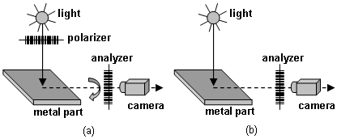
Step 2: Stack the images into a pseudo-spectral cube (PSC). Grayscale images of different lightings and channels are stacked together, and each image is called a component. The RGB (red, green, blue) channels of white light make 3 components. For the 9 monochromatic lights, the channels with enough signal are kept. At 470 and 505 nm, green and blue are used. At 590 nm, red and green are used. At 630 nm and the 5 near-infrared lights, only red is used. This gives 12 components (Table II; the paper explains the reasons for the choice only for 470 nm and near-infrared).
Polarized mode uses 3 analyzer angles, so the number of components is multiplied by 3. The paper builds 5 cubes in total. Cube 1 is white light (3 components). Cube 2 is white light with polarization (3×3 = 9). Cube 3 is monochromatic light (12). Cube 4 is monochromatic light with polarization (12×3 = 36). Cube 5 merges all of them (60) (reported in the paper, Table I, Table II). After stacking, each pixel has a set of brightness values across the lightings, which can be compared like a spectrum.
Step 3: Compute a score for each pixel, then decide whether it is a defect. For now, just keep this shared purpose in mind. Each method outputs a detection map, and then a threshold decides which pixels belong to the defect. This paper compares 6 hyperspectral imaging (HSI) detection methods. To understand the main results, first look at SAM: comparing the angle between two sets of brightness values, and treat the other 5 as method comparisons.
The 6 methods fall into 3 groups:
The key move: use the background as the reference. A spectral distance needs one reference spectrum. The paper tested 4 sources: the pixel at the defect center (t1), the pixel at the defect edge (t2), one background pixel (t3), and the average spectrum of the whole cube (t4). The paper does not give the exact positions of t1, t2, and t3. In this page's reproduction, one point each was chosen at the defect center, at the edge, and in the background far from the defect.
t3 requires choosing a normal background pixel first. t4 directly uses the average of all pixels, which may include the effect of the defect. Neither needs a defect template in advance. Instead they look for positions that differ from the background. This is also the direction in which the paper explores unsupervised methods.
When the background is the reference, a high SAM or TAU score means "looks like the background", and a defect may actually get a low score. If you change the normalized score to 1 minus its original value, pixels that do not look like the background get high scores, and you can keep the rule "a score above the threshold is judged a defect" (reported in the paper, Section IV). SID is a distance. The larger it is, the less alike the two are. So when the background is the reference, this page uses SID's difference score directly, and no complement is needed.
This section collects 35 papers and textbooks. It compares the difficulty each one addresses, its core design, its evidence, and the questions it leaves open.
| Paper | Role | Difficulty addressed | Core design | Evidence (source) | Open questions |
|---|---|---|---|---|---|
| Benmoussat 2013 (doctoral thesis) | Extension of this paper | Definitions and the evaluation process that did not fit in the 6 pages of 2012 | Chapter 2 expands this paper. It adds the definitions of PD and PFA and the choice of LEDs and color channels (Table 2.3). SAM is defined by the angle cos⁻¹ (Eq. 1.28) | Table 2.4 has exactly the same 18 AFAR values as Table III of this paper (p.61) | Still does not say how the defect ground truth was drawn (p.58). Polarization has no separate comparison table |
| Benmoussat et al. 2013 (non-destructive testing conference) | Follow-up by the same team | Metal defects, using thermal images instead | A thermal image sequence is stacked into a data cube. Singular value decomposition (a method that compresses a large amount of data into a few main components) reduces its dimension, and then RX is used | Evaluated with FAR and ROC. The effect of dimension reduction on computing time is quantified | Switched to thermal images and did not return to multiple lightings |
| Benmoussat et al. 2013 (journal) | Follow-up by the same team | Detecting metal defects with thermal images (journal version) | Thermal images + RX | Abstract | — |
| Bergmann et al. 2019 | Follow-up: industrial unsupervised anomaly detection | The kinds of defects are unknown in advance | Train only on defect-free images. Defect areas are labeled by hand at pixel level | About 1888 manually labeled regions (p.5) | Handles RGB and grayscale images and does not include spectra |
| Neogi et al. 2014 | Traditional approach (survey) | Steel surface defect inspection | Choose the lighting (bright-field, dark-field) + threshold or features + classifier | Summarizes many systems (Sections 7–11) | The methods lack a common standard of comparison (conclusion) |
| Zhang et al. 2011 (misprinted as Wu in the paper) | Reference [1] of the paper | Defects on highly reflective metal surfaces | Multi-class support vector machine (a kind of classifier). The lighting setup is not yet confirmed | — | — |
| Hornberg 2006 (textbook) | Reference [2] of the paper | Lighting design for machine vision | Chapter 3: light direction, color, polarization, and contrast | Publisher's sample chapter and table of contents | — |
| Gowen et al. 2007 | HSI in quality control | HSI for food quality control | — | Abstract | — |
| Nayar et al. 1997 | Polarization and reflection | Specular and diffuse reflection are mixed together | Use color and polarization to separate the reflection components | pp.168–169 point out that passive polarization methods are almost useless for metal | Metal shows a polarization difference only at very oblique angles |
| Atkinson and Hancock 2006 | Polarization and 3D shape | Recovering the surface direction from images | The degree of polarization maps to the tilt angle, and the polarization angle maps to the azimuth (Eq. 5, 7, 17) | Experiments on smooth dielectric objects | Explicitly does not handle metal (p.1655) |
| Wolff 1990 | Polarization and metal | Telling metal from dielectric | — | — | — |
| Shafer 1985 | Reflection color model | Why different wavelengths give different information | Dichromatic reflection model (splits reflected light into a specular part and a diffuse part; Eq. 2-1, 2-2) | Theoretical derivation, no experiments | Explicitly not applicable to metal (p.3) |
| Malvar et al. 2004 | Color interpolation in color cameras | Each pixel of a Bayer pattern has only one color | Bilinear interpolation + gradient correction (Eq. 1–5) | Image quality compared with bilinear interpolation | — |
| Gunturk et al. 2005 | Color interpolation in color cameras (survey) | Color artifacts from demosaicing | Uses the correlation between channels | Fig. 16 shows that the red channel still responds above 700 nm | — |
| Kelly 1986 | Source of detection theory | How to detect when the covariance is unknown | Generalized likelihood ratio test (compares how likely the data are under two hypotheses, "target present" and "no target"). The covariance is estimated from training samples | Derivation on pp.115–119 | — |
| Robey et al. 1992 | Original source of Eq. (1) AMF | Matched filtering when the covariance is unknown | AMF (Eq. 7–8) | Proves that AMF has the CFAR property (Eq. 9–11) | Poor at rejecting signals that do not match |
| Kraut et al. 2001 | Original source of Eq. (2) ACE | The signal strength and the noise scale are unknown | A scale-invariant subspace detector | Sec VI, Fig. 7 | Under the conditions in the paper with a high signal-to-noise ratio and enough training samples, AMF can do better than ACE. With a low signal-to-noise ratio or fewer samples, the order may reverse. It cannot be summarized as ACE always needing a stronger signal |
| Manolakis 2002 (MIT Lincoln Laboratory report) | Report version of reference [5] of the paper | A survey of HSI detection algorithms | Derivation of AMF, ACE, and RX (Eq. 52–56) | RX follows a chi-square distribution under a normal background (Eq. 11) | Lists 4 assumptions |
| Manolakis et al. 2003 | Teaching material on detection theory | The overall framework of target detection | Hypothesis testing, ROC, AMF, ACE, RX | pp.89–91, 99–101, 110–113 | When the background tails are heavier than normal, the CFAR threshold becomes inaccurate |
| Manolakis et al. 2009 | Substitute for reference [4] of the paper | Is there a best detection method? | Compares AMF, ACE, and RX (Eq. 33–37, 53–54) | The effect of target pixels mixed into the covariance estimate (Section 6.4) | — |
| Reed and Yu 1990 | Original source of Eq. (3) RX | Detection when the target spectrum is unknown | — | — | — |
| Stein et al. 2002 | Reference [6] of the paper | Anomaly detection | Local and global background models. RX is derived from the generalized likelihood ratio | pp.59–60, Eq. (3)–(6) | A local normal model does not always hold for real data (p.62) |
| Chang and Chiang 2002 | A variant of RX | Anomaly detection with a global background | RX using the mean and covariance of the whole image, and its variants | Sec II–III | The effect of removing target contamination is not clear (p.4) |
| Matteoli et al. 2010 | Survey of anomaly detection | — | — | — | — |
| Kwon and Nasrabadi 2005 | Nonlinear version of RX | A non-uniform background | First map the data to a higher-dimensional space and then apply RX | — | — |
| Kruse et al. 1993 | Original definition of Eq. (4) SAM | Spectral matching is affected by brightness | Match by the angle between two spectra, which is invariant to scaling | pp.156–157, Fig. 6 | — |
| Chang 2000 | Original source of Eq. (5) SID | Spectral similarity | Treat a spectrum as a probability distribution and compare with relative entropy | Eq. (1)(3)(4); comparison with SAM in Sec V | — |
| Du et al. 2004 | Reference [7] of the paper | Comparing SAM and SID | A hybrid measure of SID and SAM | Abstract | — |
| Keshava 2004 | Comparison of spectral distances | Distance measures and band selection | — | Abstract | — |
| Huck and Guillaume 2006 | Reference [8] of the paper | Kendall's tau for spectral detection | — | — | — |
| Huck 2009 (doctoral thesis) | Possible source of Kendall's tau | — | — | — | — |
| Kendall 1938 | Statistical source of Eq. (6) | Rank correlation | — | — | — |
| Fawcett 2006 | Introduction to ROC | How to evaluate a detector | Threshold sweep, ROC curve | Sections 1–5, 11 | It has no metric of "fix the detection rate and read the false alarm rate" |
| Kay 1998 (textbook) | Detection theory textbook | — | — | Publisher's table of contents | — |
| Chang 2003 (textbook) | HSI detection textbook | — | — | Table of contents | — |
For readers who want to go deeper: every formula in the paper, how they connect, and what each symbol means. The paper has 6 numbered formulas. (U1)–(U4) are relations this page put together from the decision, scoring, and normalization process. The min–max normalization and the maximum feasible threshold are specific choices made on this page, and they are not formulas the authors list.
| Symbol | Meaning | Setting in the paper |
|---|---|---|
| x \in \mathbb{R}^L | Spectrum of the tested pixel (pseudo-spectrum) | L is the number of components in the cube, 3 to 60 (Table I) |
| s \in \mathbb{R}^L | Target or reference spectrum | t1 defect center, t2 defect edge, t3 background pixel, t4 average spectrum of the cube (Section IV) |
| \mu | Background mean spectrum | Estimated from the whole cube (Section V) |
| \hat\Gamma | Estimated covariance matrix | Estimated from the whole cube, assuming the target and background are the same (Section III-A, V) |
| \sigma | In ACE, the factor by which the target covariance exceeds the background | Unknown, estimated from the data (Section III-A) |
| y = D(x) | Score output by the detector | One of Eq. (1)–(6) |
| \eta | Threshold | 0 to 1 after normalization, step 10⁻³ (Section V) |
| P_D,\ P_{FA} | Detection rate, false alarm rate | Computed for every threshold (Section III, V) |
| p_j,\ q_j | The j-th value of s and x divided by their sums | Eq. (5) |
| \operatorname{sign}(u) | 1 for positive, −1 for negative, 0 for zero | Eq. (6) |
| N, M, L | The two spatial dimensions of the image and the number of components | 170×240, 90×360, 130×230 pixels (Section IV) |
| \text{GDR}, \text{FAR}, \text{AFAR} | Fixed detection rate, the false alarm rate at that point, and the average over several maps | GDR = 90% (Section V) |
The start of Section III and Section V of the main text.
Section III-A and III-B of the main text.
Section III-C of the main text. The threshold must be chosen empirically.